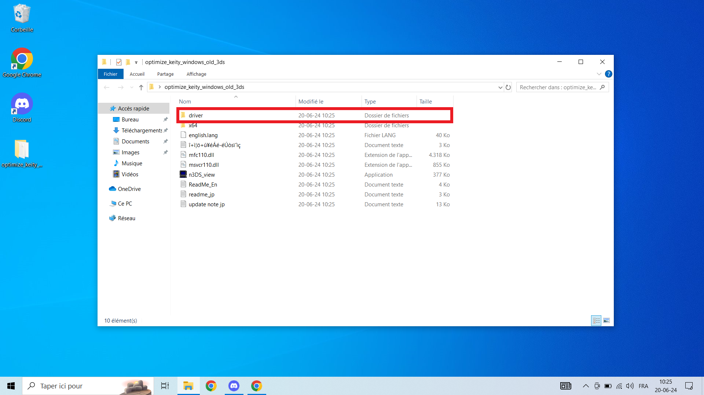
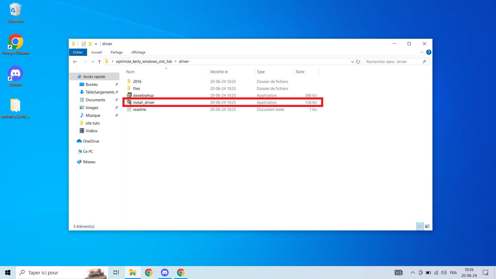
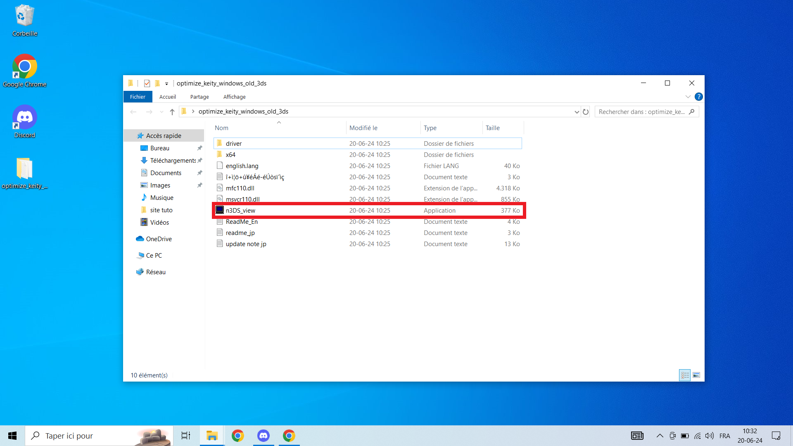
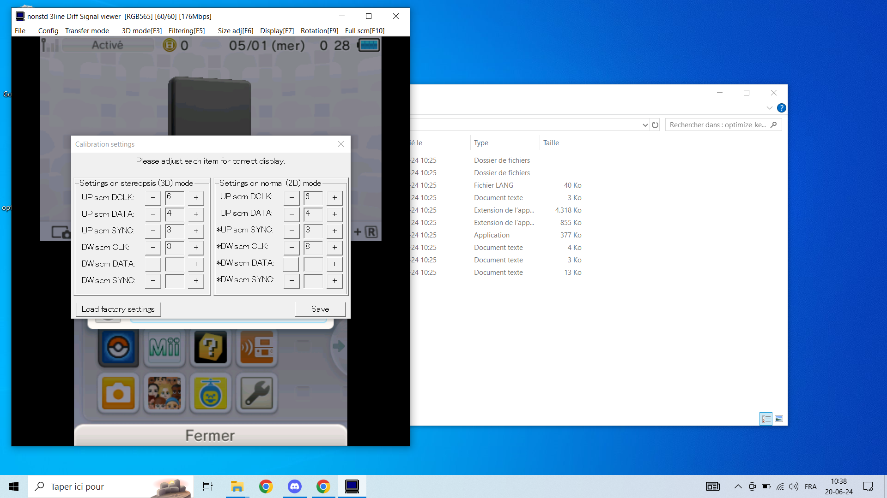
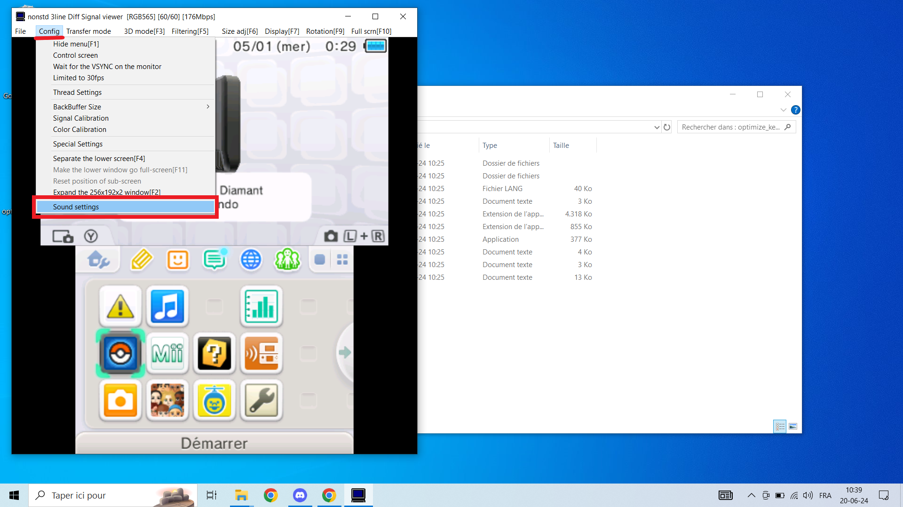
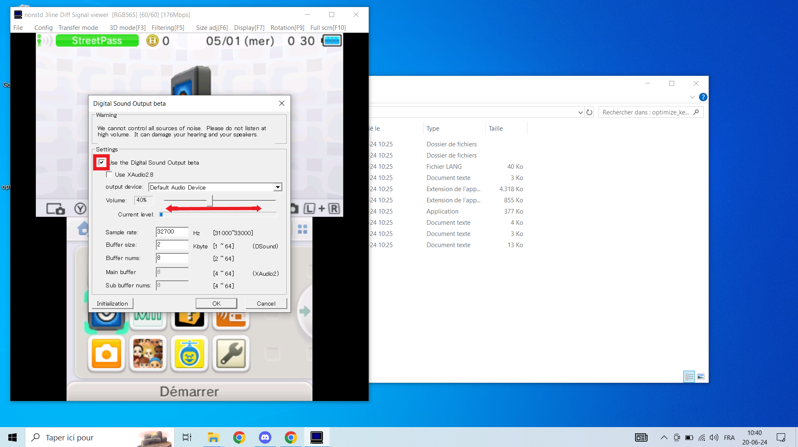

Guide de Démarrage
Guide de Démarrage pour la Capture Vidéo sur Nintendo 3DS
Bienvenue dans le guide de démarrage pour l'installation et l'utilisation du logiciel de capture vidéo pour votre console Nintendo 3DS. Veuillez suivre les étapes ci-dessous pour configurer votre système et commencer à capturer des vidéos.
Étape 1 : Téléchargement du Logiciel
Accédez à la section de téléchargement sur notre site :
- Rendez-vous sur notre site web et naviguez jusqu'à l'onglet « Téléchargement ».
- Lien direct vers la page de téléchargement.
Téléchargez le logiciel correspondant à votre modèle de console et à votre système d'exploitation :

- Sélectionnez le modèle de votre console (Old 3DS, New 3DS, etc.).
- Choisissez votre système d'exploitation (Windows, Mac, etc.).
- Cliquez sur le lien de téléchargement pour télécharger le fichier.
Étape 2 : Installation des Drivers
Localisez le dossier des drivers :
- Une fois le fichier téléchargé, extrayez-le si nécessaire.
- Ouvrez le dossier et cherchez le sous-dossier nommé « drivers ». 
Installez les drivers :
- Double-cliquez sur le fichier d'installation des drivers. 
- Suivez les instructions à l'écran pour terminer l'installation des drivers.
Étape 3 : Connexion de la Console
Branchez la console à l'ordinateur :
- Utilisez un câble USB approprié pour connecter votre console Nintendo 3DS à votre ordinateur.
- Assurez-vous que la console est allumée et correctement connectée.
Étape 4 : Lancement du Logiciel
Lancez le logiciel de capture :
- Retournez dans le dossier où vous avez téléchargé et extrait les fichiers.
- Double-cliquez sur le fichier exécutable du logiciel de capture (par exemple, n3ds_view.exe ou new3ds_view.exe). 
Étape 5 : Activation pour Old 3DS
Entrez la clé de produit pour les modèles Old 3DS :
- Si vous utilisez une console Old 3DS, une fenêtre demandant une clé de produit apparaîtra.
- Entrez la clé de produit fournie avec votre achat. Si vous ne l'avez pas, contactez-nous pour l'obtenir.
Étape 6 : Calibration
Appliquez les paramètres de calibration :
- Une fois le logiciel lancé, une fenêtre de calibration apparaîtra.
- Suivez les instructions pour régler les paramètres de calibration en fonction de votre configuration.
- Vous pouvez consulter notre guide de calibration pour des réglages optimaux. 
Étape 7 : Test de la Capture Vidéo
Testez la capture vidéo :
- Après la calibration, vous devriez voir l'écran de votre console apparaître sur l'ordinateur.
- Testez la capture vidéo pour vous assurer que tout fonctionne correctement.
- Normalement, la capture vidéo devrait fonctionner :
- À ce stade, votre système devrait être prêt pour capturer des vidéos de votre console.
Étape 8 : Activation du Son
Activer le son pour la capture vidéo :
- Ouvrez le logiciel de capture.
- Allez dans Config puis Sound Settings. 
- Cochez la case à côté de Use the digital Sound Output beta.
- Réglez le volume à l'aide du slider en dessous. 
- Assurez-vous que le son est bien configuré pour une expérience optimale de capture vidéo.
- Si vous rencontrez des problèmes ou si vous avez des questions supplémentaires, n'hésitez pas à nous contacter via notre compte X ou à rejoindre notre serveur Discord.
- Contactez-nous sur X - @3DSCaptureZ
- Rejoignez notre serveur Discord
En cas de Problème
Contactez-nous pour assistance :
Nous sommes là pour vous aider et nous assurer que vous puissiez capturer vos vidéos sans problème. Bonnes captures !
Aller dans la section Téléchargement et télécharger le logiciel correspondant à votre type de console et de votre OS.
Brancher la console.
Installer les drivers nécessaires.
Lancer le logiciel n3ds_view ou new3ds_view selon le modèle.
Une clé de produit peut vous être demandée au démarrage du logiciel uniquement sur les old 3ds.
Une fenêtre de calibration va s'ouvrir, régler selon les réglages suivants.
Normalement, la capture vidéo fonctionne.
Indiquer que si il y a un problème, la personne peut me contacter soit sur mon compte X soit demander de l'aide sur mon serveur discord.
Aller dans la section Téléchargement et télécharger le logiciel correspondant à votre type de console et de votre OS.
Brancher la console.
Installer les drivers nécessaires.
Lancer le logiciel approprié pour votre console.
Une fenêtre de calibration va s'ouvrir, régler selon les réglages suivants.
Normalement, la capture vidéo fonctionne.
Indiquer que si il y a un problème, la personne peut me contacter soit sur mon compte X soit demander de l'aide sur mon serveur discord.